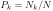
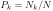

Next: K Nearest Neighbor and
As one of the most important tasks in machine learning,
pattern classification is to classify some objects of interest,
generically referred to as patterns and described by a set of  features or attributes that characterizes the patterns,
to one of some
features or attributes that characterizes the patterns,
to one of some  classes or categories. Each pattern is
represented by a vector (or a point)
classes or categories. Each pattern is
represented by a vector (or a point)
![${\bf x}=[x_1,\cdots,x_d]^T$](img3.svg) in
a d-dimensional feature space, where
is a
variable for the measurement of the ith feature. Symbolically, the
classes can be denoted
in
a d-dimensional feature space, where
is a
variable for the measurement of the ith feature. Symbolically, the
classes can be denoted
 , and a pattern
, and a pattern  belonging to the kth class is denoted by
belonging to the kth class is denoted by
 . Pattern
classification can therefore be considered as the process by which
the d-dimensional feature space is partitioned into regions each
corresponding to one of the classes. The boundaries between these
regions, called decision boundaries, are to be determined by the
specific algorithm, called a classifier, used for the classification.
. Pattern
classification can therefore be considered as the process by which
the d-dimensional feature space is partitioned into regions each
corresponding to one of the classes. The boundaries between these
regions, called decision boundaries, are to be determined by the
specific algorithm, called a classifier, used for the classification.
Pattern classification can be carried out as either a supervised
or unsupervised learning process, depending on the availability
of a training set containing patterns of known class identities.
Specifically, the training set contains a set of  patterns in
patterns in
![${\bf X}=[{\bf x}_1,\cdots,{\bf x}_N]$](img9.svg) , labeled respectively by the
corresponding component in
, labeled respectively by the
corresponding component in
![${\bf y}=[ y_1,\cdots,y_N]^T$](img10.svg) representing
the class identities of the corresponding patterns in some way. For
example, we can use
to indicate
. Alternatively, in the special case when , there are
only two classes
representing
the class identities of the corresponding patterns in some way. For
example, we can use
to indicate
. Alternatively, in the special case when , there are
only two classes  and
and  , and the classifier becomes binary
based on training pattern
, each labeled by
if
or if
.
, and the classifier becomes binary
based on training pattern
, each labeled by
if
or if
.
We assume there are  training samples
all labeled to belong
to
, and in total
samples in
the training set. If the training set is a fair representation of all
patterns of different classes in the entire dataset, then  can
be treated as an estimate of the a priori probability that any
randomly selected pattern happens to belong to class
training samples
all labeled to belong
to
, and in total
samples in
the training set. If the training set is a fair representation of all
patterns of different classes in the entire dataset, then  can
be treated as an estimate of the a priori probability that any
randomly selected pattern happens to belong to class  ,
without any prior knowledge of the pattern.
,
without any prior knowledge of the pattern.
Once a classifier is properly trained according to a specific algorithm
based on the traning set, the feature space is partitioned into regions
corresponding to the different classes and any unlabeled pattern of unknown
class as a vector in the feature space can be classified into
one of the classes.
Supervised classification can be considered as a process of
establishing the corresponding relationship between the patterns
treated as the independent or input
variables to the classifier, and the classes
 the
input patterns belong, treated as the dependent or output variables.
Therefore regression and classification can be considered as the
same supervised learning process: modeling the relationship between
the data points in
and their
corresponding labelings (or targets) in
the
input patterns belong, treated as the dependent or output variables.
Therefore regression and classification can be considered as the
same supervised learning process: modeling the relationship between
the data points in
and their
corresponding labelings (or targets) in
 . This
process is regression when the labelings take continous real values,
but it is classification when they are discrete categorical
representing different classes. Some methods in the previous chapter
on regression analysis are actually used as classifiers, such as
logistic and solfmax regressions, and the method of Gaussian process
can also be used for classification.
. This
process is regression when the labelings take continous real values,
but it is classification when they are discrete categorical
representing different classes. Some methods in the previous chapter
on regression analysis are actually used as classifiers, such as
logistic and solfmax regressions, and the method of Gaussian process
can also be used for classification.
The model output error, bias vs variance...
If the training data of labeled patterns are unavailable, various
unsupervised learning methods can be used to assign each unlabeled
patterns into one of the different groups, called clusters,
according to its position in the feature space, based on the overall
spatial structure and distribution of the data set in the feature
space. This process is called clustering analysis or simply
clustering.
In the following, methods for both supervised classification and unsupervised clustering will be discussed.